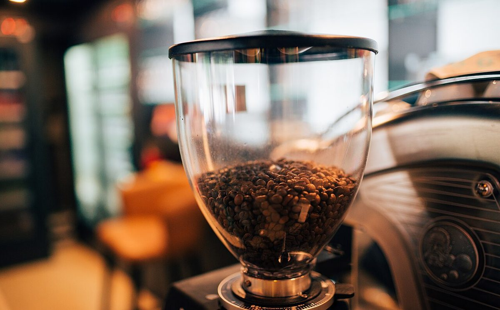
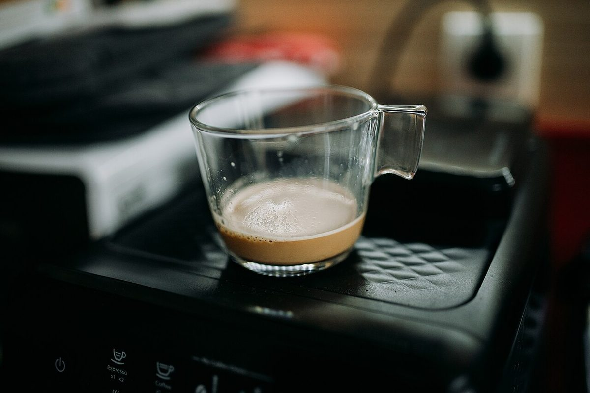
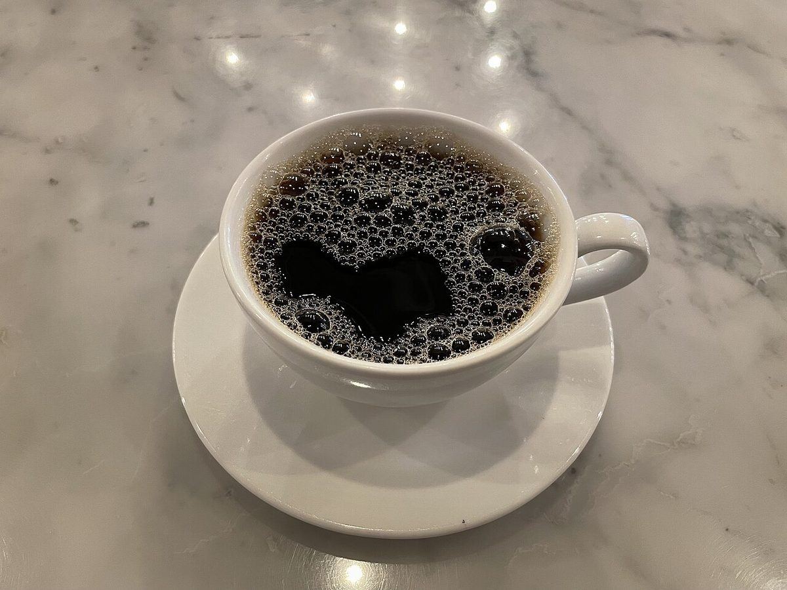

カフェ / 茨城県日立市
茨城県日立市にあるカフェ「エンカフェ」のご案内ページです。営業時間やメニューなど詳しいことは準備中です。まずはInstagramをのぞいてみてください。

制作側の連想
「en」から、エンベロープ(envelope)を思い浮かべました
店名の由来は分かりません。このページは、屋号の頭にある「en」という音から、制作側が英語の envelope(エンベロープ)を連想して作りました。エンベロープとは、電子楽器などで音の大きさが時間とともに変わるようすを表す曲線のことです。音の出はじめの Attack、すっと落ち着く Decay、保たれる Sustain、消えていく Release の4つの段階に分けて描きます。ページ上部の色つきの線がそれです。さらに、入るという意味の enter(エンター)から、アクセスのページを「Enter ↵」としています。
制作側の連想で、お店の理念・由来とは無関係です。
4つの段階(イメージ)
ひと杯を、エンベロープの形に並べると
写真は日立市のものではなく、国外・撮影地不明のフリー素材です。お店で提供しているものを示すものではありません。段階の割り当ては制作側の連想です。
- A
Attack立ち上がり
撮影地不明のイメージ 出はじめのしずく。いちばん短い段階です。
- D
Decay減衰

撮影地不明のイメージ ピークからすっと落ち着いていきます。
- S
Sustain持続

国外のイメージ(ノルウェー) 一定の高さのまま保たれる、いちばん長い段階。横に広いのはそのためです。
- R
Release余韻

撮影地不明のイメージ 鳴り終わってから消えるまでの、ゆるやかな下り坂です。
Enter ↵
お店のこと(確認できたものだけ)
| 所在地 | 〒317-0052 茨城県日立市東滑川町１丁目３１−１ |
|---|---|
| 電話 | 0294-51-5045 |
| 営業時間 | 準備中 |
| 定休日 | 準備中 |
| ご予約 | 準備中 |
| 駐車場 | 準備中 |
| SNS | Instagram @encafe1311 |